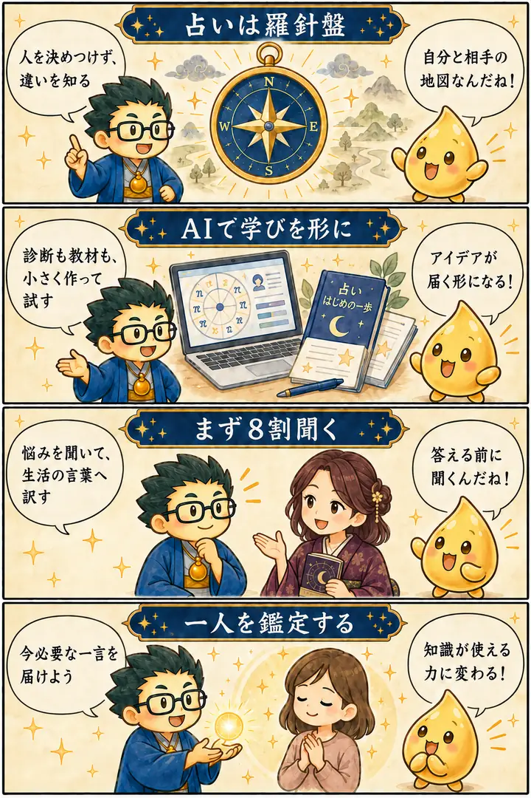

第3期 リアル講座・第1回
占いの基礎と全体像・相互鑑定
この回の要約
占いは、人を決めつけるラベルではなく、自分と相手を理解する羅針盤。
第3期の最初に、四分類・16タイプ・干支などの見方をつなぎ、AIで学びを形にする可能性を紹介しました。後半の相互鑑定では、知識を披露する前に悩みを聞き、その人に届く一言へ訳すことを練習します。
4コマ漫画でつかむ

タイムスタンプ
時間を押すと、上の動画がその場面から再生されます。
覚えておきたいこと
- 占いの分類は、本人を固定する答えではなく対話の入口。
- 一人の中には複数の性質があり、場面によって表れ方が変わる。
- AIで教材や診断を形にするときも、中身の確認と判断は人が行う。
- 鑑定では説明を急がず、悩みと望む状態を先に聞く。
- 学習だけで止めず、一人を鑑定して言葉を磨く。
復習ポイント
講義内の占術上の説明・時代の読み・象徴的な解釈は、講師の見立てです。客観的な事実や将来を保証するものではありません。